生きること やめないこと
Welcome to the Absolute Territory of a drifting soul
这款1989年首发于GameBoy上的经典游戏被移植到了3DS上。四个王国，十二个关卡，「スーパーマリオランド」在那个时候让人们知道掌机上也可以玩到他们最爱的马里奥。以如今的眼光看，两小时不足的游戏时长确实少了一些什么。我好像失去了以前俄罗斯方块都能玩一整天的快乐，研究如何用更有效的方式通关，和伙伴们「一人一条命」那样分享喜悦。不是我们不爱玩游戏了，只是缺少最初玩游戏的童心了。
优点：掌机马里奥真正意义上的开山之作，情怀加成。怪物设计丰富，音乐风格多样。
缺点：耐玩性不强，难度中等，对手残党不友好。
通关时间：2021年9月23日
发售于1992年的星之卡比是其系列的开端，由当时仅19岁的「桜井政博」设计。其乐趣在于操作的简单灵活，以及关卡的探索性。一共五个关卡，每个关卡有一个小BOSS和大BOSS（最后一关的形式很像旷野之息的盖侬战）。利用好卡比最大的特点：飞空、以及能将几乎所有敌人和物品吸入口中的能力，找出每个怪物不同的弱点然后打倒他们。不得不赞叹这款将近30岁的游戏设计之精巧，能将难度保持在适中，带给了我一个下午的欢乐。
优点：难度适中，操作灵活，画面精美。对于硬核玩家还有更具挑战性的EXTRA GAME。游戏内置原声大碟👍
吐槽：按⬆️开始飞空后，可以按A键代替⬆️，有时会让我反应不过来。
通关时间：2021年11月28日
这台红米Note 7已经用了两年，刚开始的非常兴奋啊，觉得它又便宜又好用，还有18个月质保。可渐渐地我对这台手机的喜爱越来越少，首先是MIUI，骁龙660一代神U竟然被MIUI弄成负优化，出货量这么大的U到小米手里竟然一年多就被抛弃。我知道这是一台千元机而且小米还有这么多机型要维护，但…Note 7全球都在销售而且销量这么大，为什么就不能把精力放在系统维护上呢，最基本的流畅总要保证吧。使用一年多后，从应用返回桌面已经卡成PPT了。第二个就是品控问题，手机刚买来不久就出现烧屏问题，老哥这是LCD竟然还会烧屏，这还是第一次听说。于是去小米花一个小时坐车去小米授权维修售后，说好了换屏但是耗了挺久时间的，等得我实在是不耐烦。最要命的是我用着用着开机按键脱落了，正值疫情没办法去修，于是我只好练成无开机键使用大法：开关机用LED的一只引脚戳，亮屏和解锁用指纹按键，锁屏用下拉菜单里的锁屏。就这样我在手机没有开机键的情况下用了近一年。这两年也对这台机器折腾了不少，比如照着网上的方法刷成Lineage OS又觉得功能太少再到神优化的Pixel Experience。种种经历让我已经无法信任小米在软件以及售后的做事方式，这台红米Note 7注定会成为我最后一台安卓主力机。中国的服务行业大多不把顾客当成上帝，以此类推。
先说说折腾的目标：换电池、换硅脂、换破碎的玻璃后盖和镜头盖、换开机键。
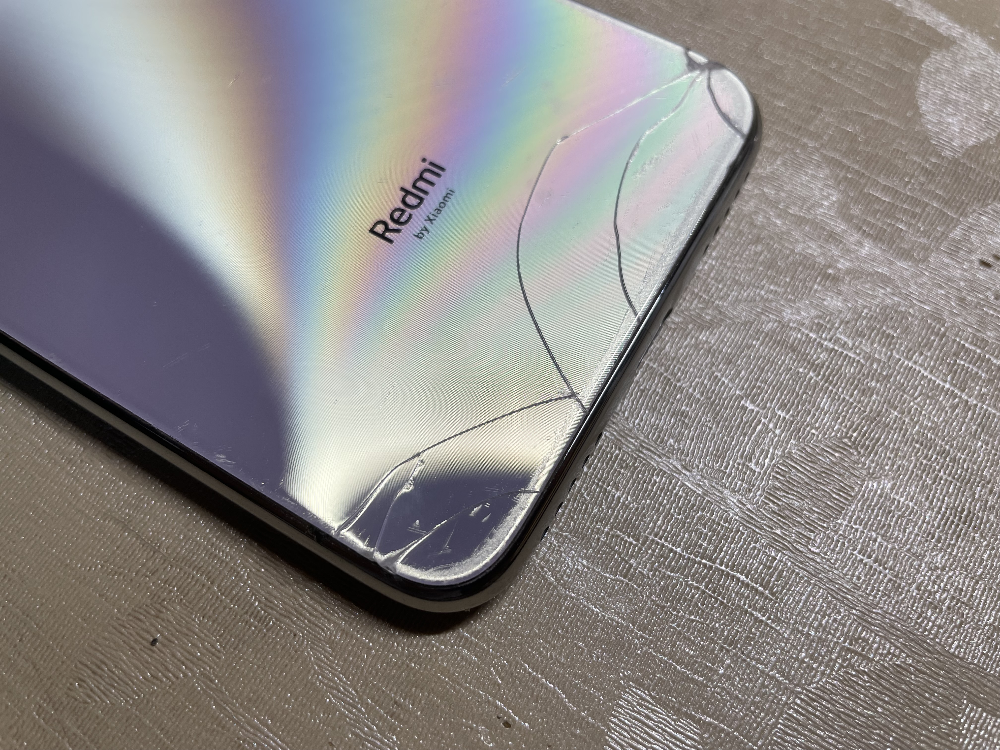 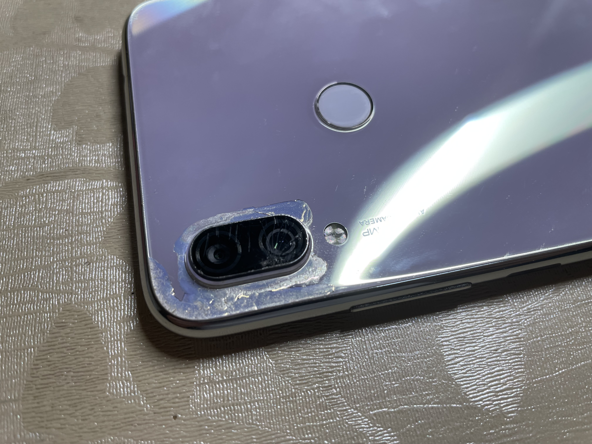（手机后盖、镜头盖破损）
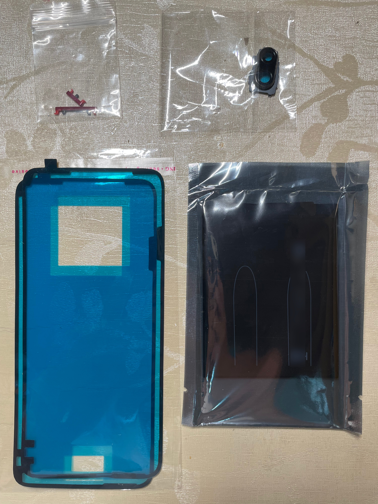（材料全家福：电池、镜头盖、按键、后盖粘胶）
首先开棺从后盖入手==，哦不对，先关机取出卡托（关机还是用LED针脚）。用风枪加热后盖边缘（我没有风枪就用吹风机代替了，其实热风吹久了还蛮烫的），我怕过热会把电池吹爆（并不会），于是很小心翼翼尽量避开电池的位置来吹。待得后盖已经有些烫手，用塑料片沿四周划开。小心主板上和后盖上连着的指纹排线模组，将后盖开启，就能看到Note 7的内部了。不禁想起以前拆手机都是卸下底部螺丝然后掰开后边的卡扣，有时会抠的指甲疼哈。
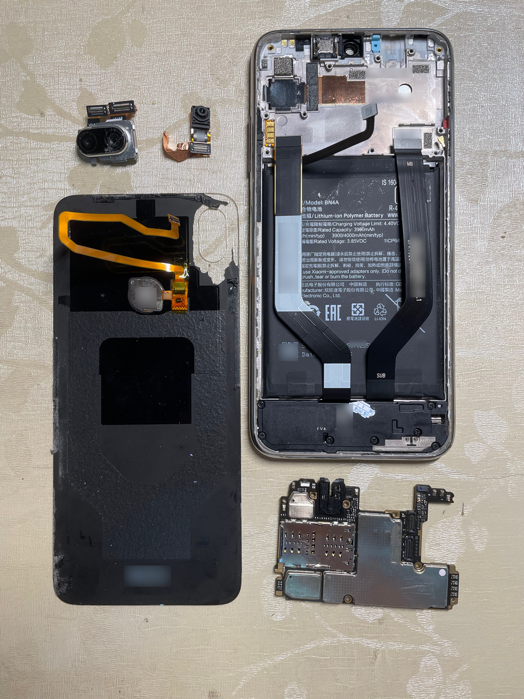（手机开棺图）
后面的事自然轻松了，但也并不轻松。第一个坑在电池的易拉胶，就是使手机和电池粘在一起的东东，想要拔出来并不容易。一开始很粗鲁地直接拔断了，查了资料才知道要用塑料棒卷住一段，慢慢地拉出来。诶，最后还是硬把电池翘出来的，耗了不少时间。装开机按键也很简单，找到开机键和音量键的侧排线，对准孔位装进去。主板原来的硅脂干了，又抹了一层新的上去。
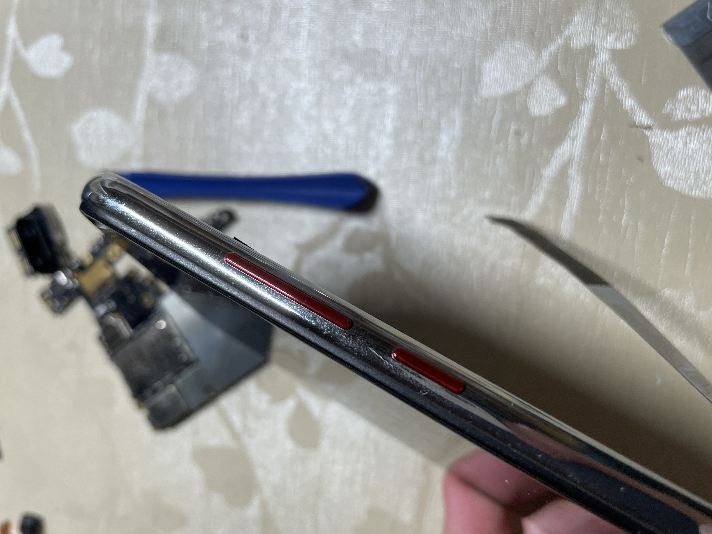（超酷的红色按键搭配银色边框）
一切更换完毕后准备开机却发现翻车了，排查了好久才发现屏幕排线装反了，倒着装屏幕排线居然也能对准孔位…
之后照着Pixel Experience的wiki安装了PE，真的真的丝滑！！！
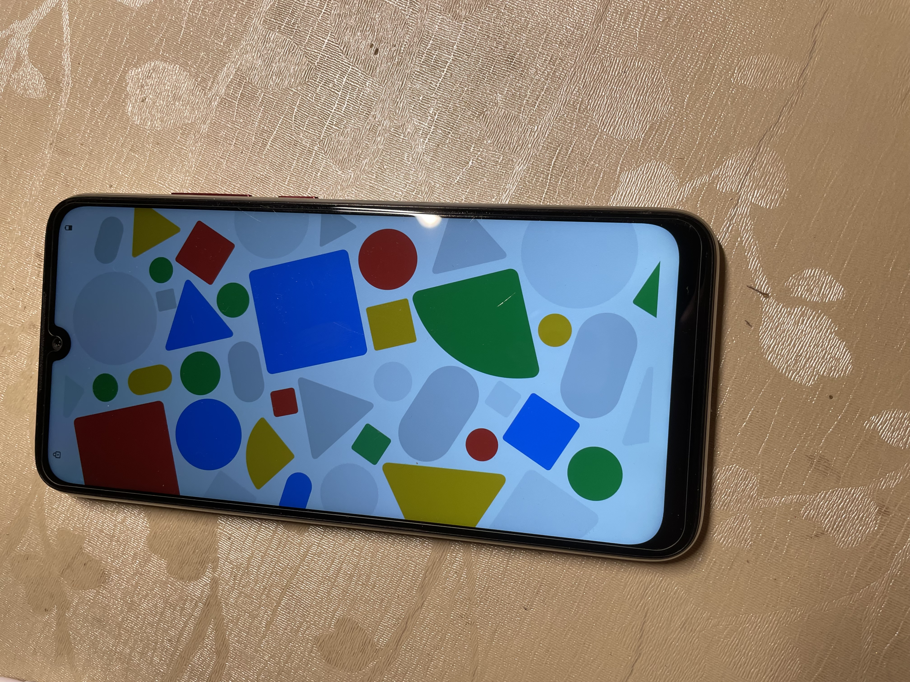都说科技以换壳为本，本来呢手机是银色版本，特意定了黑色后盖和红色开机键。还为它贴了凯夫拉的后膜防止后盖玻璃粘指纹。
 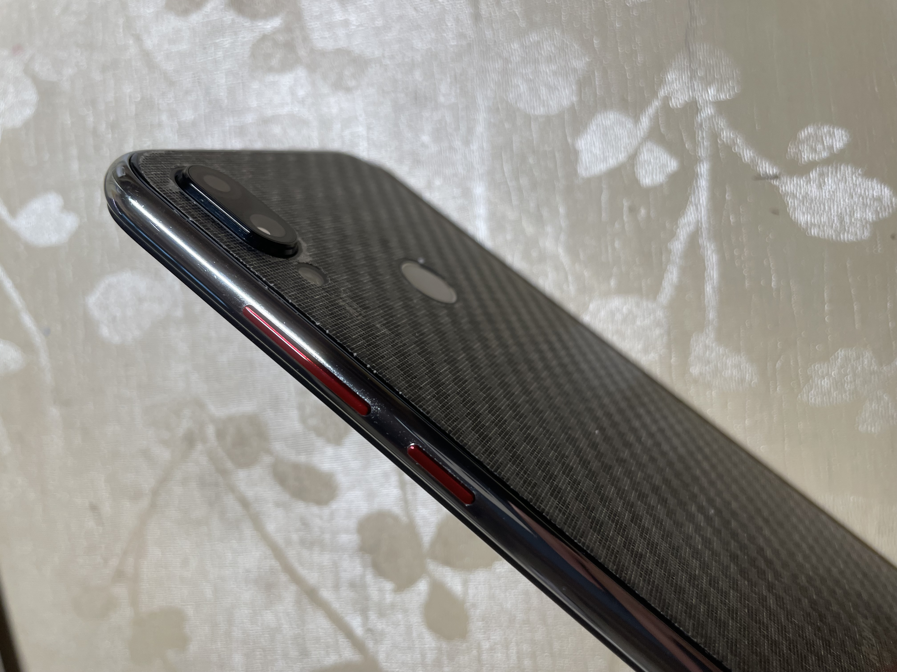
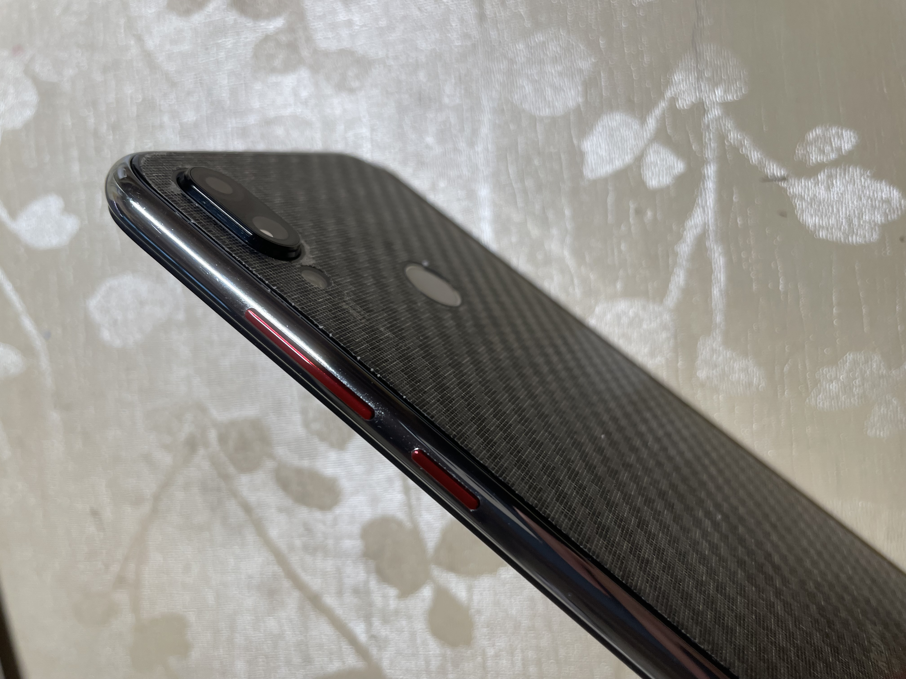
（真的好好看啊！！！）
这是我最后一次折腾安卓手机了，以后的它应该是一台热点机及备用机了…
写于2021年7月3日，上个月就弄好的事情这个月才写，博客看来还是要常更啊。
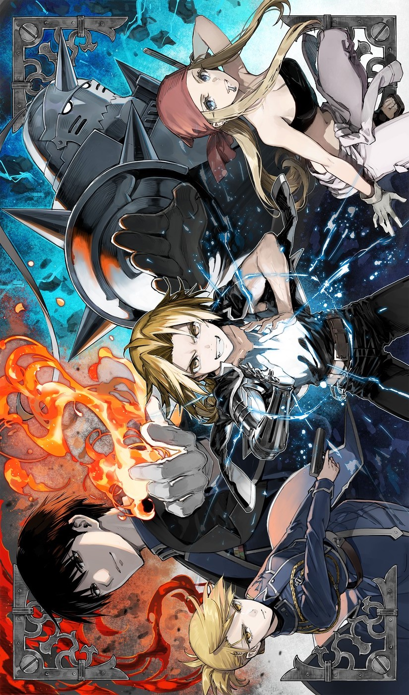如果没看过资料，我完全不会认为它是一部十年前的番剧（也可能我老番看得少）。作画上不算美轮美奂，剧情写了64集稍微有些冗长（这就是近一个月没有更博客的原因），但它给我的感觉就像一个国家的秘密似包心菜一般一层层剥开（刚看了王刚包心菜的做法，脑子里就想到这个了），引人入胜。
故事围绕「エドワード・エルリック」（爱德华・爱尔利克）和「アルフォンス・エルリック」（阿尔冯斯・爱尔利克）两兄弟为寻回身体展开，一步步接近国家人造人的秘密。在前期作者其实埋下了很多伏笔，中后期的揭秘没有给我带来很大的惊喜，反倒是揭示一个又一个人造人，从大总统到大总统儿子，倒是让我有些意外。
说到反派角色，以人的七宗罪和烧瓶中的小人想要吞噬神为开端让我眼前一亮。作者在这里给予每个罪一个实体来阻挠主角团。人造人军团的形象塑造得很好，最早挂掉的「ラスト」（色欲）和一直在地底挖圈的「スロウス」（懒惰）并喊着「めんどくさい」的人造人相对而言给我的印象不是那么深。
值得一提的是本作中还加入了中国元素，将剧中清国的炼丹术作为另一种炼金术，最后依靠两者的结合拯救国家。张梅和🐼小梅，清国少主姚麟和护卫福爷以及兰芳，在拯救国家的过程中这几位角色都发挥了重要的作用。姚麟和人造人「グリード」（贪婪）的种种让我觉得很感动。
说到感情线，「エド」和「ウィンリィ」的情谊看得我一直在屏幕前姨母笑。「エド」就是一根筋，虽说对感情处于朦胧的阶段，但在我看来他所做的种种都是非常帅气的。「アル」最后也和梅结婚了，可喜可贺可喜可贺。
最后来吐槽几点，一是有些剧情并不符合直觉，一琢磨更不符合了。二是「アル」的声音，在铠甲形态听着还好，可取回身体之后看着成熟但是却还是一样的声音有着强烈的违和感，。不过这些都是小问题，不妨碍它是一部非常值得看的作品。
写于公元2021年5月25日，无聊的数学建模课上，让我不由得想起一个词 — 「揠苗助长」。
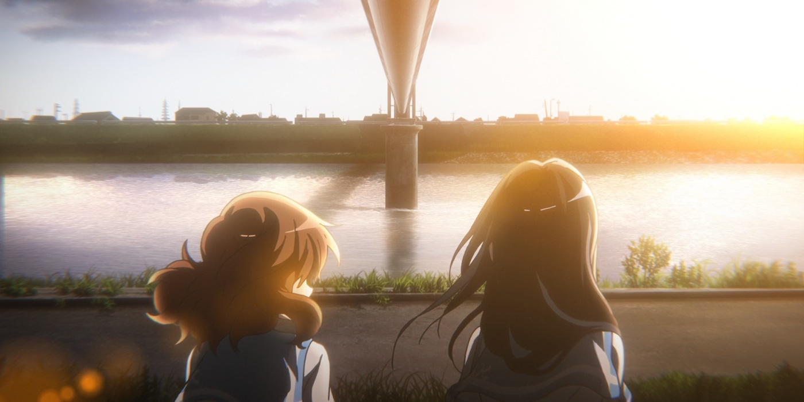趁着在五一假期之前填了京吹的坑，第一集貌似是在寒假看的，但是故事就讲到成功晋级关系大赛。这次看的第二季最后居然拿到了全国...铜赏。第二季看得我老泪纵横，京阿尼的画风还是一向地让人看得非常舒服。关于人物的性格刻画也非常的成功。
对于这部番，我会立马想到一副画面与之对应 —— 「黄前久美子」抱着上低音号的姿势，真的很青春啊。
有着一同努力的伙伴，有着许许多多的欢笑与泪水。这部番实在太有代入感，可惜这个故事不会继续下去了。「田中明日香」前辈已经毕业，吹奏部将会迎来新的部员，但这段关于青春的故事会留在每一个北宇治吹奏部部员的心中，那是一起向全国大会出发的承诺。
还有令我非常动容的一幕，「明日香」和 「黄前久美子」一起坐在大桥下面，「明日香」吹奏了一首「響け！ユーフォニアム」（没错，就是本番标题）。
第一季中「高坂麗奈」的那一身素雅长裙以及在华灯初上的城市前独奏的情景也令我印象深刻。
还有三部剧场版要补啊，这个假期有得忙了～
写于公元2021年4月29日。
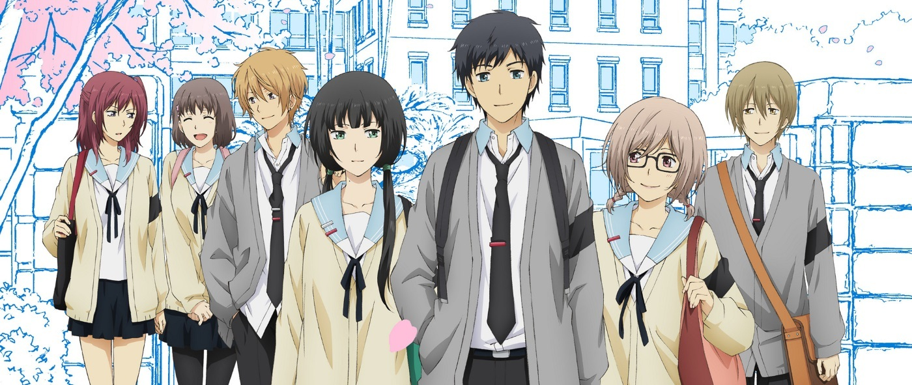最开始了解到「ReLIFE」是通过一首叫做「明日への扉」的歌，美妙的旋律背后竟隐藏了无尽的伤感。后来才知道这首歌也被很多学校用作毕业式的合唱曲目（用的是旋律大致相同的「旅立ちの日に」，两首歌都是由「川嶋愛」演唱的）。顺手一查，是一部叫做「ReLIFE」番剧的ED，于是便与它结缘了。
那时竟没想到直到今天才看完这部令人感慨而暖心的番剧，正好在17岁遇到「ReLIFE」的我，如今也多么想「ReLIFE」一次啊。围绕着「海崎新太」和「日代千鶴」两人的重返十七岁的计划展开，在青叶高中体验青春所带来的美好。番剧中展现的虽然都是日本高中校园的日常生活，但还是看得我感动不已。海崎因为是从27岁变为17岁的，所以都以过来人的眼光处事。再一次享受青春的同时，为大家带去了美好的回忆。因为在「ReLIFE」计划结束后，受验者以外的人，也就是海崎的同学和老师会忘记海崎。「虽然记忆已经不在了，但总是会留下证明一样的东西」，海崎的观察员「夜明了」这么说到。从结局来看，日代和海崎在圣诞约会时购买的钥匙链成为串起他们回忆的最重要的东西。虽然记忆会变得模糊，可是那一份感觉，永远会在心中默默存在着。
值得津津乐道的是，「ReLIFE」每一集换一个ED。ED总会在最恰好的时候插入，所以每次都会拿起手机等待致谢里ED的名字，然后找到歌曲加入歌单。OP「ボタン」也是一首关于青春的歌曲，还有让我眼前一亮的是词曲作者「堀江晶太」。
说几件剧中让我影响比较深刻的事情吧。第一个是关于排球队的事情，虽然忘记了前因后果（虽然记忆已经不在了…但我还是记得这件事的对吧！），但帮助大家建立了更为深厚的友谊。最后输掉反而却没有那么难过。第二是我得知两人在实验结束后会互相忘记对方，两情相悦却只因为顾虑对方的未来而迟迟没有表达感情，感觉非常难受。海崎教会了日代如何与朋友相处，如何从社交恐惧中走出来，享受当下的青春时光。最后是日代在结束实验之前为了不忘记海崎，偷偷在手心中写了「我喜欢「海崎新太」」，日代的负责人「小野屋」看到后泪流不止，责备日代为什么不再小心一点（因为要抹去关于海崎的记忆）。两位负责人也不愿意看到两个人的恋情就此走向结束，只是因为根据规定，必须要互相忘记。
还好结局没有留白或者来个bad ending。两个人互相回忆起对方时，我只想说「一切都太好了」。「ReLIFE」对我来说是一部意义非凡的番，也许有一天，当我27岁的时候，会和我的恋人或者妻子一起回味这一段不属于自己，但是又好像自己经历过的青春吧。
前几天做了一个心理年龄测试，测试的结果是29岁。其实并不意外，现在的大家都比较早熟，看得东西更多了，思考的东西也更加成熟了。但永远不会随着年龄改变的是，所有人类都具有的东西——情感。无论什么年龄，当下的情感，都会成为人生路上的美好风景。
感觉自己的语言表达水平堪忧了，希望自己能多写写博客。
最后，真的觉得自己的性格很像日代欸。
写于公元2021年4月10日，单曲循环着「明日への扉」。
由于昨天玩手机玩到一点半左右，下午睡了两个小时，起床后心情不是很好。
梦见了很可怕的事情，因为上学期常常熬夜，早上醒来后一般发现时间已经在上课中了。这次梦中直接把一个通识课（关于文化的，老师最后还说在江苏的同学可以去看看）搬到宿舍里了，在梦中醒来发现宿舍变大了，通识课上到一半我刚起床掀开帘子，老师同学都看了我一眼，搞得我非常尴尬。
起床后学习欲望变得非常大，心情有点差。
写于公元2021年4月6日。
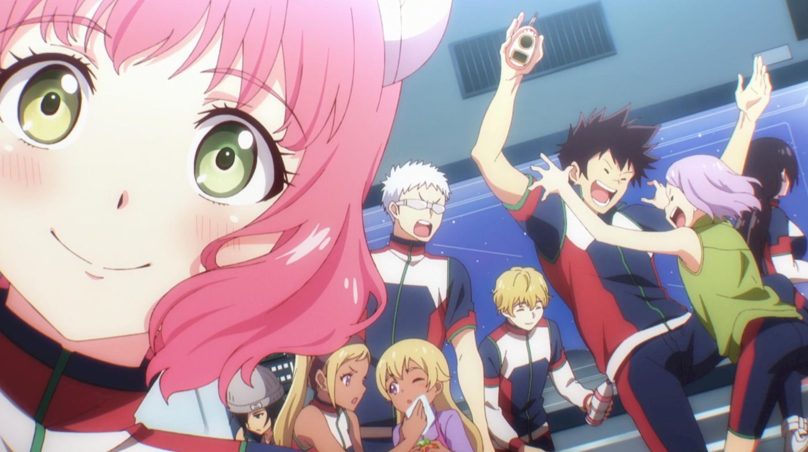（剧透向胡驺）
趁着清明的三天小长假看完了「彼方のアストラ」（彼方的阿斯特拉）。从第一天在食堂里看了第一集之后就一直停不下来了，第二天把持住自己不看最后一集，到第三天还是非常感动地看完了。在网上大概搜了一下，对于这部番的讨论热度并没有我想象中的那么高。作为2019年下半年的青春科幻番剧，它带给我类似于寒假期间看的「暗殺教室」（暗杀教室）的感觉，青春、世界观宏大（彼方的世界观在更高一层），在欢笑之中带来感动，感动之余引人深思。
彼方的情节缜密，各种伏笔层出不穷，高潮迭起。B-5组九个人的人物性格刻画都非常鲜明，而且剧中都交代了各自的人生境遇，并通过各自的遭遇揭示了背后更大的真相。十分佩服作者的脑洞，站在非常高的角度来讲述这么引人入胜的故事。对于B-5组的各位，就好像和他们经历了一场酣畅淋漓的冒险。如果说「暗殺教室」中对3年E班不同学生的刻画会有侧重（像「赤羽カルマ」和「潮田渚」的戏份就会偏多），那彼方的每个成员在我心中都有非常鲜明的印象。
「カナタ·ホシジマ」（彼方·星岛）天生的正义使者，恋爱白痴（比我还直(｡ì _ í｡)），具有正义感，莫名像「ゼノブレイド２」里的主角「レックス」。在山中遇险后失去了重要的老师，从而有了他在剧中一直不放弃任何一个人的性格。「エリアス・スプリング」（爱莉耶斯・史普林格）粉色头发天然呆的小可爱，被彼方救下后对他怦然心动，名字来源于她的克隆原型——公主「セイラ」（SEIRA - ARIES）。「ザック・ウォーカー」（札克·沃卡），高中生就有飞船驾照，无敌理工男，喜欢以非常严肃的形式给予爱的暴击（说情话）。「キトリー・ラファエリ」（金德莉·拉法耶利），傲娇属性，与札克是青梅竹马。「フニシア・ラファエリ」（福妮西娅·拉法耶利），「キトリー」的妹妹（同一个人的克隆），常用手上的手偶「ビーゴ」说一些很大人的话。「ウルガー・ツヴァイク」（乌鲁克·茨威格）继承了哥哥的精神，成为了一名敢于揭露真相的记者，会射击。「ユンファ・ルー」（韵华·卢），母亲是歌手，自幼有歌唱天赋却被埋没，在片中的戏份相对较少但也十分出彩的角色。「シャルス・ラクロワ」（夏鲁斯·拉克洛瓦），在旅行途中担任厨师角色，生物知识丰富，有沉重的经历和沉痛的使命。「ルカ・エスポジト」（卢卡·艾斯伯基特）的父亲是政治家，为了私欲不惜反对基因管理法的实施，卢卡是双性人（！！！），常常用身体开玩笑。「ポリーナ・リヴィンスカヤ」（波琳姐），地球人，被B-5组的同学在半路中捡来，沉睡后醒来已经成为星球上最长寿的人。
记录下每个人是因为我不想忘记认识他们的最初印象，以及陪伴他们走过一季番的种种。大人们为了一己私欲制造克隆人，研究记忆移植技术，将他们的孩子作为容器，以此延长自己的寿命。这其中只有「アリエス」的养母是真正爱她的孩子的，其他大人都疏远自己的孩子以防产生感情。彼方的父亲更是严格训练彼方，来实现自己再一次冲击世界冠军的混蛋想法。人以个体存活于世界上，就如札克所说的「即便基因一模一样，个体还是会因为环境的影响产生不同的性格」，要努力成为自己。即便自己是克隆人，也有自己的想法，自己的生活，自己生存下去的权利。他们中大多数人没有得到家里人的爱，却在这一场长达五个月的冒险旅途中敞开了心扉，结识了相互信赖的伙伴。中间的种种猜疑和困境，都因为大家的团结和勇敢不攻自破。这是一部立意很高的番，我从中感受到了青春热血、无畏向前的果敢。
在看前几集的时候就对故事的时间线有点摸不着头脑，1963年第三次世界大战？当波琳姐说自己来自地球，全员一脸疑惑的时候我更是满脑子问号？后来证明作者真敢想啊，人类移居其他星球后为了掩盖那段历史不惜将时间倒退100年（间接导致波琳姐+100岁）。历史是应该尘封起来还是公之于众呢，第三次世界大战（实际是2063年左右）导致人类人口锐减一半，这样惨痛的经历掩盖起来真的是好的事情吗。在我看来，历史最大的作用是让人类以史为鉴。与其说谎，将真相公之于众交予大家自行判断，从而更加珍惜和平，这才是历史积极的作用。
任何事物都有两面性，我们作为历史长河中的一粒沙土，每一个决定都影响着宇宙的走向。恰好停在地球轨道上的阿特拉斯号，恰好的B-5组的九位成员，恰好的五颗中转星球。各种各样的巧合又是必然，编织出了这段波澜壮阔的星际旅行。一个人都不能少，只要向前走，就会不断向前！
以一句话总结，我认为引用阿斯特拉号上的一句话最为恰当——「PER ASPERA AD ASTRA」（坎坷之路，必通星辰）。另外本番的ED 安月名莉子「Glow at the Velocity of Light」十分耐听，已经成为我近期单曲循环曲目。
噢，再提一句，这是我博客上的第一篇文章，博客纯粹是我吹吹水表达情感的狭小之地。有缘人，如果你不幸看到这样无趣的灵魂写的胡言乱语，对我产生了兴趣并且想认识我的话，欢迎发送邮件至「rekkusuxie [at] gmail [dot] com」。茫茫互联网世界，相遇已是不易。现在我的博客还十分简陋，后期可能会美化并且增加留言点赞功能（我是一只老鸽子了）。我坚信使用简单的元素就能够做出非常简洁漂亮的个人博客。
写于公元2021年4月5日，清明假期最后一天，刚刚看完「彼方のアストラ」并且听着「Glow at the Velocity of Light」。